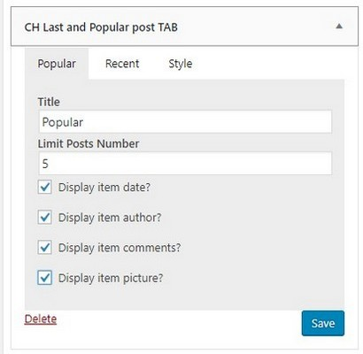
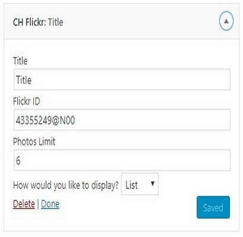

WOw Hospital/Medical Multi-Purpose WordPress Theme
Responsive Theme
- created: 21/04/2018
- latest update: 21/24/2018
- by: CHROM THEMES
- email: networkedpol@gmail.com
WOw Hospital/Medical Multi-Purpose WordPress Theme
Hosting
To run WordPress with Impreza you need a web host, that has the minimum requirements:- PHP version 7 or greater
- MySQL version 5.6 or greater OR MariaDB version 10.0 or greater
- The mod_rewrite Apache module
There are lots of suitable hosts. Contact your potential host and ask them, whether the hosting is compatible with WordPress.
Or you can find companies that specialize in WordPress-sites hosting, for example
VULTR Hosting only 2.5$
FTP
FILEZILLA
FTP is a network protocol for downloading and uploading files from your local computer to the server.
If you didn't use FTP clients before, we recommend using FileZilla ,
it's free of charge and available on most popular platforms.
Download and install FileZilla.
Step 2:Navigate to Site Manager and click on the New Site button. Set logon type as Normal. Then open panel in your hosting account and find a host, port, username, and password. Fill them in corresponding fields in FileZilla.
Step 3:Click on Connect button. After that, a list of files and folders on the server should be available. Now you can drag-and-drop files and folders from your local computer to the server.

WINSCP
WP Security
Learn more about WordPress core software security in this free white paper. You can also download it in PDF format.
To contribute a translation or update to the white paper, make a pull request at the WordPress repository on Github.
Overview
This document is an analysis and explanation of the WordPress core software development and its related security processes, as well as an examination of the inherent security built directly into the software. Decision makers evaluating WordPress as a content management system or web application framework should use this document in their analysis and decision-making, and for developers to refer to it to familiarize themselves with the security components and best practices of the software.
The information in this document is up-to-date for the latest stable release of the software, WordPress 4.7 at time of publication, but should be considered relevant also to the most recent versions of the software as backwards compatibility is a strong focus for the WordPress development team. Specific security measures and changes will be noted as they have been added to the core software in specific releases. It is strongly encouraged to always be running the latest stable version of WordPress to ensure the most secure experience possible.
Executive Summary
WordPress is a dynamic open-source content management system which is used to power millions of websites, web applications, and blogs. It currently powers more than 27% of the top 10 million websites on the Internet. WordPress' usability, extensibility, and mature development community make it a popular and secure choice for websites of all sizes.
Since its inception in 2003, WordPress has undergone continual hardening so its core software can address and mitigate common security threats, including the Top 10 list identified by The Open Web Application Security Project (OWASP) as common security vulnerabilities, which are discussed in this document.
The WordPress Security Team, in collaboration with the WordPress Core Leadership Team and backed by the WordPress global community, works to identify and resolve security issues in the core software available for distribution and installation at WordPress.org, as well as recommending and documenting security best practices for third-party plugin and theme authors.
Site developers and administrators should pay particular attention to the correct use of core APIs and underlying server configuration which have been the source of common vulnerabilities, as well as ensuring all users employ strong passwords to access WordPress.
An Overview of WordPress
WordPress is a free and open source content management system (CMS). It is the most widely-used CMS software in the world and it powers more than 27% of the top 10 million websites1, giving it an estimated 58% market share of all sites using a CMS.
WordPress is licensed under the General Public License (GPLv2 or later) which provides four core freedoms, and can be considered as the WordPress "bill of rights":
- The freedom to run the program, for any purpose.
- The freedom to study how the program works, and change it to make it do what you wish.
- The freedom to redistribute.
- The freedom to distribute copies of your modified versions to others.
The WordPress Core Leadership Team
The WordPress project is a meritocracy, run by a core leadership team, and led by its co-creator and lead developer, Matt Mullenweg. The team governs all aspects of the project, including core development, WordPress.org, and community initiatives.
The Core Leadership Team consists of Matt Mullenweg, five lead developers, and more than a dozen core developers with permanent commit access. These developers have final authority on technical decisions, and lead architecture discussions and implementation efforts.
WordPress has a number of contributing developers. Some of these are former or current committers, and some are likely future committers. These contributing developers are trusted and veteran contributors to WordPress who have earned a great deal of respect among their peers. As needed, WordPress also has guest committers, individuals who are granted commit access, sometimes for a specific component, on a temporary or trial basis.
The core and contributing developers primarily guide WordPress development. Every version, hundreds of developers contribute code to WordPress. These core contributors are volunteers who contribute to the core codebase in some way.
The WordPress Release Cycle
Each WordPress release cycle is led by one or more of the core WordPress developers. A release cycle usually lasts around 4 months from the initial scoping meeting to launch of the version.
A release cycle follows the following pattern2:
- Phase 1: Planning and securing team leads. This is done in the #core chat room on Slack. The release lead discusses features for the next release of WordPress. WordPress contributors get involved with that discussion. The release lead will identify team leads for each of the features.
- Phase 2: Development work begins. Team leads assemble teams and work on their assigned features. Regular chats are scheduled to ensure the development keeps moving forward.
- Phase 3: Beta. Betas are released, and beta-testers are asked to start reporting bugs. No more commits for new enhancements or feature requests are carried out from this phase on. Third-party plugin and theme authors are encouraged to test their code against the upcoming changes.
- Phase 4: Release Candidate. There is a string freeze for translatable strings from this point on. Work is targeted on regressions and blockers only.
- Phase 5: Launch. WordPress version is launched and made available in the WordPress Admin for updates.
Version Numbering and Security Releases
A major WordPress version is dictated by the first two sequences. For example, 3.5 is a major release, as is 3.6, 3.7, or 4.0. There isn't a "WordPress 3" or "WordPress 4" and each major release is referred to by its numbering, e.g., "WordPress 3.9."
Major releases may add new user features and developer APIs. Though typically in the software world, a "major" version means you can break backwards compatibility, WordPress strives to never break backwards compatibility. Backwards compatibility is one of the project's most important philosophies, with the aim of making updates much easier on users and developers alike.
A minor WordPress version is dictated by the third sequence. Version 3.5.1 is a minor release, as is 3.4.23. A minor release is reserved for fixing security vulnerabilities and addressing critical bugs only. Since new versions of WordPress are released so frequently — the aim is every 4-5 months for a major release, and minor releases happen as needed — there is only a need for major and minor releases.
Version Backwards Compatibility
The WordPress project has a strong commitment to backwards compatibility. This commitment means that themes, plugins, and custom code continues to function when WordPress core software is updated, encouraging site owners to keep their WordPress version updated to the latest secure release.
WordPress and Security
The WordPress Security Team
The WordPress Security Team is made up of approximately 50 experts including lead developers and security researchers — about half are employees of Automattic (makers of WordPress.com, the earliest and largest WordPress hosting platform on the web), and a number work in the web security field. The team consults with well-known and trusted security researchers and hosting companies3.
The WordPress Security Team often collaborates with other security teams to address issues in common dependencies, such as resolving the vulnerability in the PHP XML parser, used by the XML-RPC API that ships with WordPress, in WordPress 3.9.24. This vulnerability resolution was a result of a joint effort by both WordPress and Drupal security teams.
WordPress Security Risks, Process, and History
The WordPress Security Team believes in Responsible Disclosure by alerting the security team immediately of any potential vulnerabilities. Potential security vulnerabilities can be signaled to the Security Team via the WordPress HackerOne5. The Security Team communicates amongst itself via a private Slack channel, and works on a walled-off, private Trac for tracking, testing, and fixing bugs and security problems.
Each security report is acknowledged upon receipt, and the team works to verify the vulnerability and determine its severity. If confirmed, the security team then plans for a patch to fix the problem which can be committed to an upcoming release of the WordPress software or it can be pushed as an immediate security release, depending on the severity of the issue.
For an immediate security release, an advisory is published by the Security Team to the WordPress.org News site6 announcing the release and detailing the changes. Credit for the responsible disclosure of a vulnerability is given in the advisory to encourage and reinforce continued responsible reporting in the future.
Administrators of the WordPress software see a notification on their site dashboard to upgrade when a new release is available, and following the manual upgrade users are redirected to the About WordPress screen which details the changes. If administrators have automatic background updates enabled, they will receive an email after an upgrade has been completed.
Automatic Background Updates for Security Releases
Starting with version 3.7, WordPress introduced automated background updates for all minor releases7, such as 3.7.1 and 3.7.2. The WordPress Security Team can identify, fix, and push out automated security enhancements for WordPress without the site owner needing to do anything on their end, and the security update will install automatically.
When a security update is pushed for the current stable release of WordPress, the core team will also push security updates for all the releases that are capable of background updates (since WordPress 3.7), so these older but still recent versions of WordPress will receive security enhancements.
Individual site owners can opt to remove automatic background updates through a simple change in their configuration file, but keeping the functionality is strongly recommended by the core team, as well as running the latest stable release of WordPress.
2013 OWASP Top 10
The Open Web Application Security Project (OWASP) is an online community dedicated to web application security. The OWASP Top 10 list8 focuses on identifying the most serious application security risks for a broad array of organizations. The Top 10 items are selected and prioritized in combination with consensus estimates of exploitability, detectability, and impact estimates.
The following sections discuss the APIs, resources, and policies that WordPress uses to strengthen the core software and 3rd party plugins and themes against these potential risks.
A1 - Injection
There is a set of functions and APIs available in WordPress to assist developers in making sure unauthorized code cannot be injected, and help them validate and sanitize data. Best practices and documentation are available9 on how to use these APIs to protect, validate, or sanitize input and output data in HTML, URLs, HTTP headers, and when interacting with the database and filesystem. Administrators can also further restrict the types of file which can be uploaded via filters.
A2 - Broken Authentication and Session Management
WordPress core software manages user accounts and authentication and details such as the user ID, name, and password are managed on the server-side, as well as the authentication cookies. Passwords are protected in the database using standard salting and stretching techniques. Existing sessions are destroyed upon logout for versions of WordPress after 4.0.
A3 - Cross Site Scripting (XSS)
WordPress provides a range of functions which can help ensure that user-supplied data is safe10. Trusted users,
that is administrators and editors on a single WordPress installation, and network administrators only in WordPress Multisite, can post unfiltered HTML or
JavaScript as they need to, such as inside a post or page. Untrusted users and user-submitted content is filtered by default to remove dangerous entities, using
the KSES library through the wp_kses function.
As an example, the WordPress core team noticed before the release of WordPress 2.3 that the function the_search_query() was being misused by most
theme authors, who were not escaping the function's output for use in HTML. In a very rare case of slightly breaking backward compatibility, the function's
output was changed in WordPress 2.3 to be pre-escaped.
A4 - Insecure Direct Object Reference
WordPress often provides direct object reference, such as unique numeric identifiers of user accounts or content available in the URL or form fields. While these identifiers disclose direct system information, WordPress' rich permissions and access control system prevent unauthorized requests.
A5 - Security Misconfiguration
The majority of the WordPress security configuration operations are limited to a single authorized administrator. Default settings for WordPress are continually evaluated at the core team level, and the WordPress core team provides documentation and best practices to tighten security for server configuration for running a WordPress site11.
A6 - Sensitive Data Exposure
WordPress user account passwords are salted and hashed based on the Portable PHP Password Hashing Framework12. WordPress' permission system is used to control access to private information such an registered users' PII, commenters' email addresses, privately published content, etc. In WordPress 3.7, a password strength meter was included in the core software providing additional information to users setting their passwords and hints on increasing strength. WordPress also has an optional configuration setting for requiring HTTPS.
A7 - Missing Function Level Access Control
WordPress checks for proper authorization and permissions for any function level access requests prior to the action being executed. Access or visualization of administrative URLs, menus, and pages without proper authentication is tightly integrated with the authentication system to prevent access from unauthorized users.
A8 - Cross Site Request Forgery (CSRF)
WordPress uses cryptographic tokens, called nonces13, to validate intent of action requests from authorized users to protect against potential CSRF threats. WordPress provides an API for the generation of these tokens to create and verify unique and temporary tokens, and the token is limited to a specific user, a specific action, a specific object, and a specific time period, which can be added to forms and URLs as needed. Additionally, all nonces are invalidated upon logout.
A9 - Using Components with Known Vulnerabilities
The WordPress core team closely monitors the few included libraries and frameworks WordPress integrates with for core functionality. In the past the core team has made contributions to several third-party components to make them more secure, such as the update to fix a cross-site vulnerability in TinyMCE in WordPress 3.5.214.
If necessary, the core team may decide to fork or replace critical external components, such as when the SWFUpload library was officially replaced by the Plupload library in 3.5.2, and a secure fork of SWFUpload was made available by the security team15 for those plugins who continued to use SWFUpload in the short-term.
A10 - Unvalidated Redirects and Forwards
WordPress' internal access control and authentication system will protect against attempts to direct users to unwanted destinations or automatic redirects. This
functionality is also made available to plugin developers via an API, wp_safe_redirect()16.
Further Security Risks and Concerns
XXE (XML eXternal Entity) processing attacks
When processing XML, WordPress disables the loading of custom XML entities to prevent both External Entity and Entity Expansion attacks. Beyond PHP's core functionality, WordPress does not provide additional secure XML processing API for plugin authors.
SSRF (Server Side Request Forgery) Attacks
HTTP requests issued by WordPress are filtered to prevent access to loopback and private IP addresses. Additionally, access is only allowed to certain standard HTTP ports.
WordPress Plugin and Theme Security
The Default Theme
WordPress requires a theme to be enabled to render content visible on the frontend. The default theme which ships with core WordPress (currently "Twenty Fifteen") has been vigorously reviewed and tested for security reasons by both the team of theme developers plus the core development team.
The default theme can serve as a starting point for custom theme development, and site developers can create a child theme which includes some customization but falls back on the default theme for most functionality and security. The default theme can be easily removed by an administrator if not needed.
WordPress.org Theme and Plugin Repositories
There are approximately 50,000+ plugins and 4,500+ themes listed on the WordPress.org site. These themes and plugins are submitted for inclusion and are manually reviewed by volunteers before making them available on the repository.
Inclusion of plugins and themes in the repository is not a guarantee that they are free from security vulnerabilities. Guidelines are provided for plugin authors to consult prior to submission for inclusion in the repository17, and extensive documentation about how to do WordPress theme development18 is provided on the WordPress.org site.
Each plugin and theme has the ability to be continually developed by the plugin or theme owner, and any subsequent fixes or feature development can be uploaded to the repository and made available to users with that plugin or theme installed with a description of that change. Site administrators are notified of plugins which need to be updated via their administration dashboard.
When a plugin vulnerability is discovered by the WordPress Security Team, they contact the plugin author and work together to fix and release a secure version of the plugin. If there is a lack of response from the plugin author or if the vulnerability is severe, the plugin/theme is pulled from the public directory, and in some cases, fixed and updated directly by the Security Team.
The Theme Review Team
The Theme Review Team is a group of volunteers, led by key and established members of the WordPress community, who review and approve themes submitted to be included in the official WordPress Theme directory. The Theme Review Team maintains the official Theme Review Guidelines19, the Theme Unit Test Data20, and the Theme Check Plugin21, and attempts to engage and educate the WordPress Theme developer community regarding development best practices. Inclusion in the group is moderated by core committers of the WordPress development team.
The Role of the Hosting Provider in WordPress Security
WordPress can be installed on a multitude of platforms. Though WordPress core software provides many provisions for operating a secure web application, which were covered in this document, the configuration of the operating system and the underlying web server hosting the software is equally important to keep the WordPress applications secure.
A Note about WordPress.com and WordPress security
WordPress.com is the largest WordPress installation in the world, and is owned and managed by Automattic, Inc., which was founded by Matt Mullenweg, the WordPress project co-creator. WordPress.com runs on the core WordPress software, and has its own security processes, risks, and solutions22. This document refers to security regarding the self-hosted, downloadable open source WordPress software available from WordPress.org and installable on any server in the world.
Appendix
Core WordPress APIs
The WordPress Core Application Programming Interface (API) is comprised of several individual APIs23, each one covering the functions involved in, and use of, a given set of functionality. Together, these form the project interface which allows plugins and themes to interact with, alter, and extend WordPress core functionality safely and securely.
While each WordPress API provides best practices and standardized ways to interact with and extend WordPress core software, the following WordPress APIs are the most pertinent to enforcing and hardening WordPress security:
Database API
The Database API24, added in WordPress 0.71, provides the correct method for accessing data as named values which are stored in the database layer.
Filesystem API
The Filesystem API25, added in WordPress 2.626, was originally created for WordPress' own automatic updates feature. The Filesystem API abstracts out the functionality needed for reading and writing local files to the filesystem to be done securely, on a variety of host types.
It does this through the WP_Filesystem_Base class, and several subclasses which implement different ways of connecting to the local filesystem,
depending on individual host support. Any theme or plugin that needs to write files locally should do so using the WP_Filesystem family of classes.
HTTP API
The HTTP API27, added in WordPress 2.728 and extended further in WordPress 2.8, standardizes the HTTP requests for WordPress. The API handles cookies, gzip encoding and decoding, chunk decoding (if HTTP 1.1), and various other HTTP protocol implementations. The API standardizes requests, tests each method prior to sending, and, based on your server configuration, uses the appropriate method to make the request.
Permissions and current user API
The permissions and current user API29 is a set of functions which will help verify the current user's permissions and authority to perform any task or operation being requested, and can protect further against unauthorized users accessing or performing functions beyond their permitted capabilities.
White paper content License
The text in this document (not including the WordPress logo or trademark) is licensed under CC0 1.0 Universal (CC0 1.0) Public Domain Dedication. You can copy, modify, distribute and perform the work, even for commercial purposes, all without asking permission.
A special thank you to Drupal's security white paper, which provided some inspiration.
Additional Reading
- WordPress News https://wordpress.org/news/
- WordPress Security releases https://wordpress.org/news/category/security/
- WordPress Developer Resources https://developer.wordpress.org/
Authored by Sara Rosso
Contributions from Barry Abrahamson, Michael Adams, Jon Cave, Helen Hou-Sandí, Dion Hulse, Mo Jangda, Paul Maiorana
Version 1.0 March 2015
https://wordpress.org/about/security/
Skins
Author
Front
Admin Panel
Last and Popular post TAB
Front
Admin Panel
Advertisement
Front
Admin Panel

Contact
Front
Admin Panel
Flickr
Front
Admin Panel
Popular Post
Front
Admin Panel
Social
Front
Admin Panel
Font customization
Default fonts:
The theme comes with two preset default Google Fonts: Roboto Condensed,sans-serif. This ensures out of the box functionality and cross-browser visual consistency. The fonts usage is spread on various elements like the menu, post titles, blocks title, etc. For the elements which are not defined we added a general font family on the body and paragraph(p) tags: Verdana, Geneva, sans-serif;

The icons and other small design elements (ex. social icons, menu arrows, etc.) are included in the “fontawsome” font which is located in the \wow\assets\fonts folder.
Font customization:
Wow Theme has a fully customizable Theme Fonts section where you can set custom, Google, Typekit or standard fonts, font sizes and font line heights. Everything you need to adjust your website fonts you will find under the Theme Fonts tab! Theme fonts panel section is structured in a multitude of expandable areas related to the elements you can customize. In each area, you will find loaded by default a standard font, size, line height, style, and weight. All these elements are fully customizable.
Google Fonts:
For each element from the Theme Setting > Typography you can use a different type of Google Fonts. Select the section where you want to apply the Google fonts. Google Fonts are included in the drop-down list.

Timetable and Event Schedule

- Check Timetable and Event Schedule Plugin Demo
- Please find the step-by-step instructions of working with the plugin here
Key advantages
Responsive design. It’s optimized to be viewed perfectly on different devices. A good step forward, the plugin was supplied with the ability to manually adjust the way to show your timetable on mobile devices and desktops.
A well thought-out toolkit of shortcode settings. It eliminates the difficulties of timetabling as all preferable settings can be applied in minutes. Each setting is supplied with sufficient clarifications to ensure you coordinate and edit your events fast without additional help.
Handy event filtering. The visitors can filter the timetable to display the only events they are interested in.
Color controls. Highlight important activities by presenting them in different colors. Additionally, it simplifies and speeds up the search as the needed events marked with the same color can be noticed faster even without being filtered. Various color markers can become helpful in making the timetable more colorful or in customizing it to fit your website color scheme.
More precise visual time frames. Hourly time frames are generally large enough for showing the events, but using the MotoPress Timetable plugin you still can increase them by setting the timetable to show up to 15 minutes accurate time in the left ‘time’ column.
Flexibility. If any unexpected delays or total dates’ changes take place, your timetable can bend easily in one direction or another thanks to a couple of qucik time edits in the backend.
Main features
- Several column types
- Selecting/deselecting the preferable columns and events to be displayed in the timetable
- Ability to add event tags and categories
- Ability to display the events by the appropriate categories
- Hour measure to be displayed in the left timetable column to show more accurate duration of each activity (event)
- Several filter styles: drop-down list and tabs
- Option to display/hide ‘All Events’ view mode, hours column and empty rows
- Customizable event parameters (title, time, subtitle, etc.) and the ability to display only preferable ones in the timetable
- Featured images for individual events
- Opportunity to set event URL to link it any external website
- Text align options for event blocks
- Unique IDs for multiple timetables on a single page
- Color settings for background, background hover, text, and text hover
- Export/import of your data
Credits
Plugin bundles the following third-party resources:
- GUMP, Copyright (c) 2015 wixelhq.com, MIT License
- jQuery UI, Copyright (c) 2013 jQuery Foundation and other contributors Licensed MIT
- Spectrum Colorpicker, by Brian Grinstead, MIT License
- jBox, by Stephan Wagner, MIT License
- jQuery UI Timepicker, Copyright 2010-2013, Francois Gelinas, Dual licensed under the MIT or GPL Version 2 licenses.
SOCIAL MEDIA SETTINGS